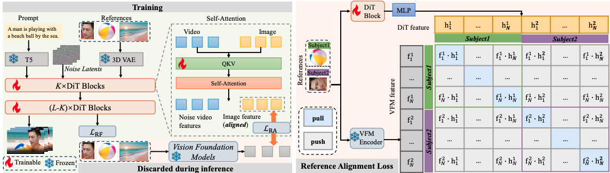

RefAlign: Representation Alignment for Reference-to-Video Generation
ECCV, 2026

Key idea:
We propose RefAlign, a training-time representation alignment framework that explicitly aligns
DiT reference-branch features to the semantic space of a visual foundation model (VFM)
to improve identity consistency and reduce cross-modal artifacts.